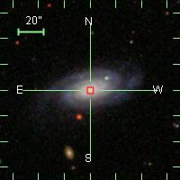
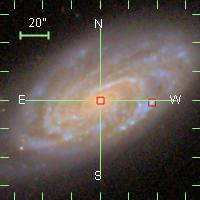
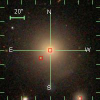
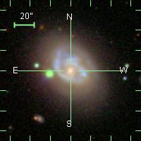
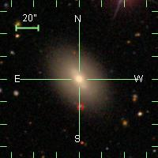
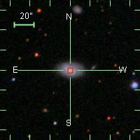

Hosts that meet the following requirements:
(i) host any kind of SN
(ii) 0.005 < z < 0.03
Click in the header to sort the SNe based on this criterion
A small and red square means that there is available spectrum in SDSS
| HOST ID | HOST RA (deg) | HOST DEC (deg) | z | SN | Type | SN RA (deg) | SN RA (deg) | R (arcsec) | SN image | HOST |
| UGC 00014 | 0.89591667 | 23.200778 | 0.024140 | 2006sr | Ia | 0.89591667 | 23.196167 | 16.599600 | | |
| UGC 00040 | 1.4517083 | 27.449417 | 0.025091 | 2003it | Ia | 1.4519583 | 27.452667 | 11.734564 | | |
| UGC 00052 | 1.7061667 | 8.6285000 | 0.017535 | 2002hw | Ia | 1.7044167 | 8.6301389 | 8.6313656 | | |
| UGC 00139 | 3.6327083 | 0.73755556 | 0.013219 | 1998dk | Ia | 3.6340000 | 0.73636111 | 6.3335447 | | |
| MCG -01-02-001 | 5.0002083 | -6.3339167 | 0.012372 | 1999cw | Ia | 5.0060833 | -6.3343333 | 21.203108 | | |
| NGC 0105 | 6.3191667 | 12.889444 | 0.017646 | 2007A | Ia | 6.3194167 | 12.886806 | 9.5393506 | | |
| - | 6.3191667 | 12.889444 | - | 1997cw | Ia | 6.3219583 | 12.885056 | 18.722622 | | |
| UGC 00272 | 6.9572500 | -1.2000000 | 0.012993 | 2005hk | Ia | 6.9619583 | -1.1979167 | 18.535011 | | |
| NGC 0191A | 9.7510000 | -9.0145833 | 0.020452 | 2006ej | Ia | 9.7490417 | -9.0157222 | 8.1554360 | | |
| NGC 0232 | 10.690917 | -23.561361 | 0.022639 | 2006et | ? | 10.690917 | -23.558444 | 10.501200 | | |
| NGC 0252 | 12.006250 | 27.623639 | 0.016471 | 1998de | Ia | 12.028667 | 27.624583 | 80.772723 | | |
| UGC 00646 | 15.859958 | 32.237361 | 0.017742 | 1998ef | Ia | 15.861958 | 32.236778 | 7.4996641 | | |
| NGC 0382 | 16.849458 | 32.403861 | 0.017442 | 2000dk | Ia | 16.848000 | 32.406444 | 10.677902 | | |
| NGC 0477 | 20.334875 | 40.488194 | 0.019600 | 2002jy | Ia | 20.317792 | 40.498694 | 72.186858 | | |
| ESO 352- G 057 | 20.510042 | -34.196778 | 0.018983 | 1992bo | Ia | 20.492458 | -34.212000 | 83.726616 | | NO SDSS IMAGE |
| NGC 0495 | 20.733333 | 33.471667 | 0.013723 | 1999ej | Ia | 20.739083 | 33.466111 | 28.784614 | | |
| NGC 0524 | 21.198833 | 9.5388333 | 0.007935 | 2000cx | Ia-pec | 21.192292 | 9.5085833 | 111.41678 | | |
| - | 21.198833 | 9.5388333 | - | 2008Q | Ia | 21.238458 | 9.5504167 | 148.62009 | | |
| NGC 0523 | 21.336667 | 34.024722 | 0.015871 | 2001en | Ia | 21.345417 | 34.025139 | 31.535751 | | |
| IC 0126 | 22.449417 | -1.9837500 | 0.019667 | 1993ae | Ia | 22.453792 | -1.9769722 | 29.041804 | | |
| UGC 01087 | 22.860833 | 14.277500 | 0.014960 | 1999dk | II | 22.862167 | 14.284917 | 27.129636 | | |
| NGC 0632 | 24.323042 | 5.8776389 | 0.010567 | 1998es | Ia | 24.323333 | 5.8807222 | 11.149206 | | |
| NGC 0673 | 27.093500 | 11.521306 | 0.017285 | 1996bo | Ia | 27.095250 | 11.520861 | 6.5004926 | | |
| - | 27.093500 | 11.521306 | - | 2001fa | IIn | 27.092583 | 11.526222 | 18.002860 | | |
| NGC 0759 | 29.459708 | 36.343111 | 0.015567 | 2002fb | Ia-pec | 29.453750 | 36.340639 | 23.221688 | | NO SDSS IMAGE |
| KUG 0155+361 | 29.565792 | 36.348278 | 0.015880 | 2006td | Ia | 29.565667 | 36.349361 | 3.9246836 | | NO SDSS IMAGE |
| NGC 0809 | 31.079042 | -8.7353056 | 0.017902 | 2006ef | Ia | 31.081292 | -8.7283889 | 26.184461 | | |
| KUG 0215+372 | 34.576458 | 37.464333 | 0.030000 | 2002hu | Ia | 34.583583 | 37.466333 | 26.641368 | | NO SDSS IMAGE |
| NGC 0911 | 36.426667 | 41.956278 | 0.019233 | 2006em | Ia | 36.434583 | 41.942167 | 58.246996 | | NO SDSS IMAGE |
| UGC 01993 | 37.916917 | 39.378361 | 0.026745 | 1999gp | Ia | 37.913125 | 39.381194 | 17.040269 | | NO SDSS IMAGE |
| - | 37.916917 | 39.378361 | - | 2003hc | II | 37.925167 | 39.368194 | 47.135314 | | NO SDSS IMAGE |
| - | 37.916917 | 39.378361 | - | 1973P | ? | 37.899250 | 39.389139 | 74.502448 | | NO SDSS IMAGE |
| NGC 0976 | 38.500083 | 20.976778 | 0.014327 | 1999dq | Ia | 38.498667 | 20.975111 | 7.8740033 | | |
| IC 1844 | 41.455833 | 3.2303056 | 0.022719 | 1995ak | Ia | 41.453458 | 3.2305833 | 8.6082484 | | |
| CGCG 539-121 | 43.568958 | 42.725917 | 0.021118 | 2005ls | Ia | 43.566542 | 42.724944 | 9.3764521 | | |
| ESO 300- G 009 | 46.315875 | -39.561306 | 0.020000 | 1992bc | Ia | 46.316875 | -39.559611 | 7.0848009 | | NO SDSS IMAGE |
| MCG -01-09-006 | 47.201333 | -7.0406111 | 0.028977 | 2005eq | Ia | 47.205458 | -7.0332500 | 30.377136 | | |
| NGC 1259 | 49.322000 | 41.385500 | 0.019400 | 2008L | Ia | 49.319375 | 41.382667 | 13.903885 | | |
| - | 49.322000 | 41.385500 | - | 2006gy | IIn | 49.362750 | 41.405417 | 163.28488 | | |
| UGC 02650 | 49.393667 | -1.6950833 | 0.028293 | 2006gj | ? | 49.399167 | -1.6917222 | 23.204505 | | NO SDSS IMAGE |
| NGC 1275 | 49.950667 | 41.511694 | 0.017559 | 1968A | I | 49.954917 | 41.503944 | 31.819805 | | |
| - | 49.950667 | 41.511694 | - | 2005mz | Ia | 49.957833 | 41.505167 | 34.894621 | | |
| NGC 1316 | 50.673833 | -37.208222 | 0.005871 | 2006mr | Ia | 50.678500 | -37.207917 | 16.837040 | | NO SDSS IMAGE |
| - | 50.673833 | -37.208222 | - | 2006dd | II? | 50.673417 | -37.203611 | 16.667019 | | NO SDSS IMAGE |
| - | 50.673833 | -37.208222 | - | 1981D | Ia | 50.659917 | -37.232722 | 101.43476 | | NO SDSS IMAGE |
| UGC 02708 | 50.953583 | 40.557833 | 0.028430 | 2002es | Ia-pec | 50.946792 | 40.564861 | 35.182604 | | |
| NGC 1380 | 54.114958 | -34.976222 | 0.006261 | 1992A | Ia | 54.114208 | -34.958722 | 63.057831 | | NO SDSS IMAGE |
| UGC 02829 | 55.461917 | 8.1598333 | 0.021301 | 2006kf | Ia | 55.460333 | 8.1569444 | 11.860784 | | |
| UGC 03108 | 69.618042 | 44.037111 | 0.013206 | 2006lf | Ia | 69.622875 | 44.033750 | 21.192418 | | NO SDSS IMAGE |
| UGC 03151 | 71.331833 | 11.067806 | 0.014600 | 1995bd | Ia | 71.338500 | 11.067361 | 24.054605 | | |
| NGC 1699 | 74.248458 | -4.7568611 | 0.013129 | 2001ep | Ia | 74.251083 | -4.7611667 | 18.153718 | | |
| UGC 03218 | 75.182125 | 62.244028 | 0.017432 | 2011M | Ia | 75.173125 | 62.244056 | 32.400157 | | NO SDSS IMAGE |
| - | 75.182125 | 62.244028 | - | 2006le | Ia | 75.174958 | 62.255278 | 48.020328 | | NO SDSS IMAGE |
| ESO 552- G 052 | 75.502792 | -21.136944 | 0.015344 | 2006hb | Ia | 75.505333 | -21.131972 | 20.101242 | | NO SDSS IMAGE |
| NGC 1819 | 77.942250 | 5.2006111 | 0.014910 | 2005el | Ia | 77.953000 | 5.1942778 | 44.916862 | | NO SDSS IMAGE |
| UGC 03329 | 84.135750 | 16.648861 | 0.017522 | 1999ek | Ia | 84.131667 | 16.638278 | 40.835931 | | NO SDSS IMAGE |
| UGC 03365 | 88.147833 | 66.819861 | 0.017182 | 2006ke | Ia | 88.155750 | 66.816806 | 30.549540 | | NO SDSS IMAGE |
| CGCG 308-009 | 92.126625 | 64.723694 | 0.014277 | 2006N | Ia | 92.130167 | 64.723639 | 12.752737 | | |
| UGC 03432 | 94.056792 | 57.051500 | 0.016672 | 1996bv | Ia | 94.054167 | 57.052472 | 10.077048 | | NO SDSS IMAGE |
| - | 94.056792 | 57.051500 | - | 2003kb | Ic? | 94.052458 | 57.053583 | 17.310889 | | NO SDSS IMAGE |
| CGCG 233-023 | 99.319667 | 49.849889 | 0.019300 | 2002kf | Ia | 99.313792 | 49.852833 | 23.656893 | | NO SDSS IMAGE |
| ESO 427- G 006 | 101.44450 | -31.230389 | 0.009360 | 2004S | Ia | 101.43125 | -31.231250 | 47.800602 | | NO SDSS IMAGE |
| NGC 2258 | 101.94083 | 74.481667 | 0.013539 | 1997E | Ia | 101.90875 | 74.497500 | 128.78797 | | NO SDSS IMAGE |
| UGC 03576 | 103.27917 | 50.034056 | 0.019900 | 1998ec | Ia | 103.27546 | 50.039472 | 23.633433 | | NO SDSS IMAGE |
| UGC 03634 | 105.40317 | 14.135250 | 0.026322 | 2005na | Ia | 105.40258 | 14.133250 | 7.5067554 | | NO SDSS IMAGE |
| NGC 2320 | 106.42512 | 50.581056 | 0.019827 | 2000B | Ia | 106.41971 | 50.586250 | 26.998977 | | NO SDSS IMAGE |
| UGC 03725 | 107.92425 | 49.866667 | 0.020584 | 2007au | Ia | 107.94213 | 49.853722 | 79.466885 | | NO SDSS IMAGE |
| NGC 2268 | 108.57267 | 84.382278 | 0.007412 | 1982B | Ia | 108.64050 | 84.386583 | 244.67932 | | |
| UGC 03770 | 108.87321 | 23.426250 | 0.021275 | 2000fa | Ia | 108.87450 | 23.428444 | 9.1625029 | | NO SDSS IMAGE |
| UGC 03787 | 109.48983 | 9.6893333 | 0.028729 | 2003ch | Ia | 109.49133 | 9.6930278 | 14.354627 | | NO SDSS IMAGE |
| UGC 03845 | 111.67796 | 47.093972 | 0.010120 | 1997do | Ia | 111.67708 | 47.093333 | 3.9151072 | | NO SDSS IMAGE |
| - | 111.67796 | 47.093972 | - | 1987Q | Ia | 111.67138 | 47.080111 | 55.236685 | | NO SDSS IMAGE |
| NGC 2441 | 117.97808 | 73.015694 | 0.011575 | 1995E | Ia | 117.98646 | 73.009611 | 37.278220 | | NO SDSS IMAGE |
| UGC 04195 | 121.27862 | 66.782917 | 0.016305 | 2000ce | Ia | 121.28937 | 66.787556 | 42.149654 | | |
| UGC 04322 | 125.00725 | 62.830583 | 0.024564 | 2002he | Ia-pec? | 124.99513 | 62.820333 | 57.143341 | | NO SDSS IMAGE |
| UGC 04414 | 126.77483 | 21.645278 | 0.025221 | 2005mc | Ia | 126.77650 | 21.646000 | 6.5498080 | | |
| NGC 2595 | 126.92508 | 21.479111 | 0.014443 | 1999aa | Ia-pec | 126.92512 | 21.487444 | 29.999146 | | |
| ARK 174 | 129.59938 | 17.631333 | 0.027425 | 2004gs | Ia | 129.59658 | 17.627722 | 16.449802 | | |
| NGC 2623 | 129.60033 | 25.754639 | 0.018509 | 1999gd | Ia | 129.60254 | 25.759194 | 18.226144 | | |
| UGC 04614 | 132.31829 | 36.119806 | 0.025204 | 2005ms | Ia | 132.30975 | 36.129972 | 47.797258 | | |
| CGCG 180-022 | 133.63262 | 36.509611 | 0.025171 | 1999X | Ia | 133.63429 | 36.511417 | 8.8552214 | | |
| MCG +08-17-043 | 137.38721 | 50.281861 | 0.016770 | 2001G | Ia | 137.38825 | 50.280917 | 5.0563483 | | |
| NGC 2935 | 144.18687 | -21.128139 | 0.007575 | 1975F | pec | 144.18879 | -21.131083 | 12.653135 | | NO SDSS IMAGE |
| - | 144.18687 | -21.128139 | - | 1996Z | Ia | 144.18675 | -21.147694 | 70.399325 | | NO SDSS IMAGE |
| NGC 2930 | 144.38583 | 23.202500 | 0.024624 | 2005M | Ia | 144.38483 | 23.200750 | 7.2560320 | | |
| - | 144.38583 | 23.202500 | - | 2010jn | Ia | 144.37600 | 23.159250 | 159.67091 | | |
| UGC 05129 | 144.49167 | 25.494778 | 0.013539 | 2001fe | Ia | 144.48792 | 25.494806 | 13.500376 | | |
| ARP 321 NED01 | 144.72312 | -4.8492778 | 0.022109 | 2003D | Ia | 144.72300 | -4.8514167 | 7.7121489 | | NO SDSS IMAGE |
| NGC 2962 | 145.22471 | 5.1658056 | 0.006558 | 1995D | Ia | 145.22812 | 5.1406111 | 91.527190 | | |
| NGC 2986 | 146.06683 | -21.278000 | 0.007679 | 1999gh | Ia | 146.08229 | -21.273611 | 57.855363 | | NO SDSS IMAGE |
| UGC 05234 | 146.70629 | 16.042861 | 0.020071 | 2003W | Ia | 146.70617 | 16.043778 | 3.3293461 | | |
| - | 146.70629 | 16.042861 | - | 2004gg | II-pec | 146.70458 | 16.045694 | 11.912676 | | |
| NGC 3021 | 147.73813 | 33.553639 | 0.005140 | 1995al | Ia | 147.73321 | 33.552611 | 18.094498 | | |
| IC 0582 | 149.75092 | 17.817139 | 0.025731 | 2001gb | Ia | 149.75400 | 17.820111 | 15.408330 | | |
| - | 149.75092 | 17.817139 | - | 2009ba | Ia | 149.75800 | 17.816694 | 25.538296 | | |
| 2MASX J09591870-1928233 | 149.82800 | -19.473139 | 0.012175 | 2007al | Ia | 149.82700 | -19.473833 | 4.3820090 | | NO SDSS IMAGE |
| UGC 05378 | 150.13329 | 4.4070556 | 0.013880 | 2007S | Ia | 150.13025 | 4.4072778 | 10.973195 | |  |
| CGCG 266-031 | 153.92604 | 55.667472 | 0.024197 | 2002bf | Ia | 153.92629 | 55.668528 | 3.9066818 | | |
| NGC 3147 | 154.22354 | 73.400750 | 0.009346 | 2008fv | Ia | 154.23867 | 73.410111 | 64.050184 | | NO SDSS IMAGE |
| - | 154.22354 | 73.400750 | - | 1972H | I | 154.25167 | 73.410722 | 107.44282 | | NO SDSS IMAGE |
| - | 154.22354 | 73.400750 | - | 1997bq | Ia | 154.27221 | 73.383917 | 185.39541 | | NO SDSS IMAGE |
| - | 154.22354 | 73.400750 | - | 2006gi | Ib | 154.19483 | 73.440667 | 177.00988 | | NO SDSS IMAGE |
| NGC 3294 | 159.06771 | 37.324694 | 0.005290 | 1990H | II-P | 159.06283 | 37.324222 | 17.649983 | |  |
| - | 159.06771 | 37.324694 | - | 1992G | Ia | 159.07737 | 37.321167 | 37.021468 | | |
| CGCG 313-029 | 159.38329 | 65.018278 | 0.022538 | 2006ar | Ia | 159.37813 | 65.016139 | 20.108802 | | |
| NGC 3327 | 159.99138 | 24.091250 | 0.021025 | 2001N | Ia | 159.99200 | 24.090556 | 3.3501980 | | |
| NGC 3332 | 160.11821 | 9.1825556 | 0.019207 | 2005ki | Ia | 160.11758 | 9.2023333 | 71.235833 | | |
| UGC 06332 | 169.81921 | 20.813556 | 0.020770 | 2007bc | Ia | 169.81071 | 20.809028 | 34.670969 | | |
| - | 169.81921 | 20.813556 | - | 2002bp | ? | 169.82583 | 20.806417 | 35.049605 | | |
| UGC 06363 | 170.25196 | 21.337806 | 0.021035 | 2004bg | Ia | 170.25637 | 21.339833 | 17.472736 | | |
| NGC 3644 | 170.38696 | 2.8104444 | 0.023770 | 1996V | Ia | 170.38012 | 2.8112222 | 24.782692 | | |
| NGC 3663 | 170.99962 | -12.296444 | 0.016739 | 2006ax | Ia | 171.01442 | -12.291444 | 56.238407 | | NO SDSS IMAGE |
| ESO 439- G 018 | 174.50204 | -32.324694 | 0.029557 | 2001ba | Ia | 174.50733 | -32.330833 | 29.173646 | | NO SDSS IMAGE |
| UGC 06609 | 174.62275 | 20.527722 | 0.025724 | 2006bd | ? | 174.61858 | 20.526222 | 15.953687 | | |
| NGC 3873 | 176.44208 | 19.773944 | 0.018126 | 2007ci | Ia | 176.44104 | 19.770528 | 12.854902 | | |
| NGC 3891 | 177.01396 | 30.359333 | 0.021013 | 2006or | ? | 177.01446 | 30.356667 | 9.7649335 | | |
| NGC 3987 | 179.33717 | 25.195389 | 0.015018 | 2001V | Ia | 179.35388 | 25.202500 | 65.376478 | | |
| ARP 244 | 180.47208 | -18.876944 | 0.005688 | 2004gt | Ib/Ic | 180.45987 | -18.870194 | 50.225690 | | NO SDSS IMAGE |
| - | 180.47208 | -18.876944 | - | 1921A | ? | 180.48550 | -18.884528 | 55.492976 | | NO SDSS IMAGE |
| - | 180.47208 | -18.876944 | - | 1974E | ? | 180.48883 | -18.875083 | 60.671036 | | NO SDSS IMAGE |
| NGC 4061 | 181.00617 | 20.232333 | 0.024027 | 2008bf | Ia | 181.01208 | 20.245167 | 50.865803 | | |
| NGC 4070 | 181.04704 | 20.409833 | 0.024060 | 2005bl | Ia | 181.05108 | 20.406889 | 17.995945 | |  |
| UGC 07357 | 184.80579 | 22.431528 | 0.022289 | 2006cp | Ia | 184.81204 | 22.427278 | 27.209190 | | |
| ESO 573- G 014 | 185.31588 | -21.995750 | 0.022809 | 2000bh | Ia | 185.31308 | -21.998806 | 14.921180 | | NO SDSS IMAGE |
| MESSIER 100 | 185.72846 | 15.821806 | 0.005240 | 2006X | Ia | 185.72496 | 15.809194 | 47.119110 | | |
| - | 185.72846 | 15.821806 | - | 1959E | I | 185.74542 | 15.816972 | 63.487626 | | |
| - | 185.72846 | 15.821806 | - | 1979C | IIB-L | 185.74429 | 15.797694 | 103.83847 | | |
| - | 185.72846 | 15.821806 | - | 1914A | ? | 185.73479 | 15.792028 | 109.59610 | | |
| - | 185.72846 | 15.821806 | - | 1901B | I | 185.69608 | 15.823972 | 116.82851 | | |
| NGC 4493 | 187.78487 | 0.61369444 | 0.023159 | 2004br | Ia | 187.78250 | 0.61322222 | 8.6997125 | | |
| - | 187.78487 | 0.61369444 | - | 1994M | Ia | 187.78587 | 0.60544444 | 29.917386 | | |
| NGC 4495 | 187.84533 | 29.136472 | 0.015177 | 1994S | Ia | 187.84104 | 29.134444 | 17.082705 | | |
| - | 187.84533 | 29.136472 | - | 2011ca | Ic | 187.85392 | 29.130722 | 37.212683 | | |
| - | 187.84533 | 29.136472 | - | 2010lo | ? | 187.84863 | 29.126111 | 39.145812 | | |
| NGC 4496A | 187.91337 | 3.9394722 | 0.005771 | 1960F | Ia | 187.92521 | 3.9465833 | 49.720854 | | |
| - | 187.91337 | 3.9394722 | - | 1988M | II | 187.92054 | 3.9223889 | 66.697036 | | |
| MESSIER 088 | 187.99650 | 14.420389 | 0.007609 | 1999cl | Ia | 187.98337 | 14.426472 | 52.094350 | | |
| NGC 4520 | 188.45792 | -7.3755556 | 0.025444 | 2000bk | Ia | 188.47475 | -7.3785833 | 61.560618 | | NO SDSS IMAGE |
| NGC 4527 | 188.53508 | 2.6536667 | 0.005791 | 1915A | ? | 188.54829 | 2.6505833 | 48.834296 | | |
| - | 188.53508 | 2.6536667 | - | 1991T | Ia | 188.54250 | 2.6656667 | 50.791446 | | |
| - | 188.53508 | 2.6536667 | - | 2004gn | Ic | 188.55042 | 2.6595556 | 59.153460 | | |
| NGC 4536 | 188.61271 | 2.1881389 | 0.006031 | 1981B | Ia | 188.62317 | 2.1998056 | 56.409081 | | |
| NGC 4619 | 190.43562 | 35.062778 | 0.023106 | 2006ac | Ia | 190.43692 | 35.085306 | 81.235720 | | |
| IC 3690 | 190.70496 | 10.357472 | 0.025361 | 1992P | Ia | 190.70388 | 10.360056 | 10.082221 | | |
| NGC 4675 | 191.38287 | 54.737611 | 0.015866 | 1997Y | Ia | 191.38083 | 54.738056 | 7.5166974 | | |
| NGC 4680 | 191.72796 | -11.637056 | 0.008312 | 1997bp | Ia | 191.72396 | -11.642556 | 24.482647 | |  |
| NGC 4679 | 191.87604 | -39.570861 | 0.015489 | 2001cz | Ia | 191.87571 | -39.580028 | 33.022576 | | NO SDSS IMAGE |
| NGC 4704 | 192.19346 | 41.921250 | 0.027132 | 1998ab | Ia | 192.19683 | 41.924528 | 16.924666 | | |
| MCG -01-33-012 | 192.25633 | -9.4570278 | 0.012879 | 2007N | Ia | 192.25521 | -9.4528333 | 15.629237 | | |
| MRK 1337 | 193.14462 | -9.7766944 | 0.008526 | 2006D | Ia | 193.14142 | -9.7752222 | 12.680676 | | NO SDSS IMAGE |
| IC 3918 | 194.22308 | 22.373611 | 0.021778 | 2007bz | Ia | 194.22404 | 22.372806 | 4.5102483 | | |
| - | 194.22308 | 22.373611 | - | 2011bm | Ic | 194.22454 | 22.374500 | 6.1537059 | | |
| IC 4042A | 195.17850 | 27.963111 | 0.027906 | 2006bz | Ia | 195.18075 | 27.961611 | 9.7349884 | | |
| UGC 08162 | 195.81713 | 50.620750 | 0.023591 | 2007F | Ia | 195.81283 | 50.618806 | 16.988467 | | |
| 2MASX J13050256+2844204 | 196.26058 | 28.739000 | 0.028063 | 2006cg | Ia | 196.25967 | 28.740000 | 4.8674609 | | |
| ESO 269- G 057 | 197.51846 | -46.437333 | 0.010360 | 1992K | Ia-pec | 197.51829 | -46.439972 | 9.5200916 | | NO SDSS IMAGE |
| NGC 5018 | 198.25429 | -19.518194 | 0.009393 | 2002dj | Ia | 198.25142 | -19.519083 | 10.816320 | | NO SDSS IMAGE |
| CGCG 044-035 | 198.45521 | 6.9626111 | 0.023963 | 2002cx | Ia-pec | 198.45717 | 6.9588611 | 15.232765 | | |
| NGC 5061 | 199.52113 | -26.837222 | 0.006945 | 1996X | Ia | 199.50471 | -26.845917 | 66.888293 | | NO SDSS IMAGE |
| - | 199.52113 | -26.837222 | - | 2005cn | Ia | 199.50192 | -26.809194 | 122.32548 | | NO SDSS IMAGE |
| ESO 576- G 040 | 200.18229 | -22.051111 | 0.006938 | 2003am | II | 200.18154 | -22.048194 | 10.842749 | | NO SDSS IMAGE |
| - | 200.18229 | -22.051111 | - | 1997br | Ia-pec | 200.17667 | -22.036750 | 55.517407 | | NO SDSS IMAGE |
| ESO 508- G 067 | 201.04383 | -23.877361 | 0.024897 | 1992ag | Ia | 201.04104 | -23.878806 | 11.311178 | | NO SDSS IMAGE |
| MCG -02-34-061 | 202.76600 | -15.101194 | 0.014066 | 2007ca | Ia | 202.77421 | -15.101833 | 29.645387 | | NO SDSS IMAGE |
| ESO 383- G 032 | 203.84471 | -34.159583 | 0.023616 | 2000ca | Ia | 203.84575 | -34.160278 | 4.5030590 | | NO SDSS IMAGE |
| - | 203.84471 | -34.159583 | - | 1997cv | ? | 203.83654 | -34.203222 | 159.82991 | | NO SDSS IMAGE |
| NGC 5283 | 205.27400 | 67.672306 | 0.010404 | 2005dv | Ia | 205.26854 | 67.672306 | 19.656000 | | NO SDSS IMAGE |
| CGCG 190-050 | 206.39579 | 35.611139 | 0.023676 | 2006cs | Ia | 206.39121 | 35.610167 | 16.855223 | | |
| NGC 5308 | 206.75179 | 60.973167 | 0.006808 | 1996bk | Ia | 206.74158 | 60.970250 | 38.226676 | | |
| NGC 5304 | 207.50617 | -30.578472 | 0.012402 | 2005al | Ia | 207.50138 | -30.576167 | 19.136675 | | NO SDSS IMAGE |
| MCG +08-25-047 | 207.70346 | 49.315111 | 0.027000 | 1996C | Ia | 207.74617 | 49.343611 | 184.84498 | | |
| ESO 445- G 066 | 208.20942 | -30.710000 | 0.024207 | 1993H | Ia | 208.20921 | -30.707861 | 7.7374218 | | NO SDSS IMAGE |
| NGC 5440 | 210.75433 | 34.757861 | 0.012305 | 1998D | Ia | 210.74700 | 34.748417 | 43.037399 | | |
| NGC 5468 | 211.64537 | -5.4531111 | 0.009480 | 2005P | ? | 211.64171 | -5.4618333 | 34.052341 | | NO SDSS IMAGE |
| - | 211.64537 | -5.4531111 | - | 2002ed | IIP | 211.65925 | -5.4577778 | 52.716649 | | NO SDSS IMAGE |
| - | 211.64537 | -5.4531111 | - | 1999cp | Ia | 211.63042 | -5.4469444 | 58.218878 | | NO SDSS IMAGE |
| - | 211.64537 | -5.4531111 | - | 2002cr | Ia | 211.65663 | -5.4394167 | 63.825085 | | NO SDSS IMAGE |
| NGC 5490 | 212.48871 | 17.545556 | 0.016195 | 1997cn | Ia-pec | 212.49067 | 17.542306 | 13.662984 | | |
| UGC 09391 | 218.65425 | 59.337806 | 0.006384 | 2003du | Ia | 218.64917 | 59.334389 | 22.040201 | | |
| MCG -01-39-003 | 230.38871 | -7.4478889 | 0.006461 | 2005cf | Ia | 230.38421 | -7.4131944 | 125.94642 | | NO SDSS IMAGE |
| UGC 10030 | 236.75175 | 0.98513889 | 0.029864 | 2002ck | Ia | 236.75313 | 0.99041667 | 19.638771 | | |
| CGCG 108-012 | 239.09829 | 16.523306 | 0.015818 | 2007ap | ? | 239.09608 | 16.516083 | 27.192711 | |  |
| IC 1151 | 239.63475 | 17.441472 | 0.007235 | 1991M | Ia | 239.64508 | 17.457972 | 70.080720 | | |
| NGC 6063 | 241.80412 | 7.9790000 | 0.009500 | 1999ac | Ia-pec | 241.81254 | 7.9723333 | 38.662942 | | |
| NGC 6104 | 244.12783 | 35.708056 | 0.028116 | 2002de | Ia | 244.12658 | 35.708389 | 4.6569434 | | |
| CGCG 224-104 | 252.46321 | 40.433417 | 0.029564 | 1994Q | Ia | 252.46300 | 40.432167 | 4.5630621 | |  |
| UGC 10738 | 257.77437 | 5.8522500 | 0.022402 | 2001cp | Ia | 257.76104 | 5.8410556 | 62.665184 | | NO SDSS IMAGE |
| UGC 10743 | 257.87808 | 7.9946111 | 0.008569 | 2002er | Ia | 257.87450 | 7.9957778 | 13.555130 | | NO SDSS IMAGE |
| NGC 6365A | 260.68254 | 62.166083 | 0.028341 | 2003U | Ia | 260.69025 | 62.164000 | 28.751131 | | |
| NGC 6411 | 263.88687 | 60.813389 | 0.012695 | 1999da | Ia | 263.84567 | 60.813694 | 148.32406 | | |
| ARK 527 | 266.03583 | 40.867306 | 0.006004 | 2003fa | Ia | 266.03217 | 40.881000 | 51.028808 | | NO SDSS IMAGE |
| NGC 6495 | 268.71150 | 18.326917 | 0.010431 | 1998bp | Ia | 268.71142 | 18.330694 | 13.600250 | | NO SDSS IMAGE |
| UGC 11064 | 269.42092 | 27.834722 | 0.023493 | 2000cn | Ia | 269.41842 | 27.832806 | 11.339175 | | NO SDSS IMAGE |
| - | 269.42092 | 27.834722 | - | 2010gd | Ic | 269.42075 | 27.830028 | 16.909479 | | NO SDSS IMAGE |
| - | 269.42092 | 27.834722 | - | 2005ds | II | 269.41621 | 27.838444 | 21.611212 | | NO SDSS IMAGE |
| CGCG 141-044 | 270.39004 | 26.252833 | 0.015501 | 2001bf | Ia | 270.39163 | 26.250639 | 9.7544297 | | NO SDSS IMAGE |
| NGC 6627 | 275.66217 | 15.698000 | 0.017586 | 1998V | Ia | 275.65583 | 15.702139 | 27.257236 | | |
| CGCG 172-029 | 275.76721 | 29.901389 | 0.026962 | 2007co | Ia | 275.76500 | 29.897111 | 17.334433 | | NO SDSS IMAGE |
| - | 275.76721 | 29.901389 | - | 2007ck | II | 275.77329 | 29.900278 | 22.250423 | | NO SDSS IMAGE |
| NGC 6685 | 279.99433 | 39.981778 | 0.021905 | 2006bq | Ia | 279.99533 | 39.982444 | 4.3253307 | | |
| - | 279.99433 | 39.981778 | - | 2011fy | II-P | 279.97471 | 40.028806 | 183.44383 | | |
| IC 4758 | 281.57613 | -65.756667 | 0.015114 | 2001cn | Ia | 281.57433 | -65.761611 | 18.941316 | | NO SDSS IMAGE |
| IC 4830 | 288.45233 | -59.294361 | 0.014637 | 2001bt | Ia | 288.44479 | -59.289667 | 31.974250 | | NO SDSS IMAGE |
| MCG +07-41-001 | 299.05358 | 40.433972 | 0.015881 | 2002do | Ia | 299.05367 | 40.436333 | 8.5057731 | | NO SDSS IMAGE |
| IC 4919 | 300.03767 | -55.373389 | 0.014224 | 1991ag | Ia | 300.03587 | -55.367528 | 22.072234 | | NO SDSS IMAGE |
| NGC 6928 | 308.20925 | 9.9264167 | 0.015701 | 2004eo | Ia | 308.22579 | 9.9285278 | 60.027055 | | NO SDSS IMAGE |
| ESO 234- G 069 | 311.47737 | -51.391111 | 0.014615 | 1992al | Ia | 311.48538 | -51.394417 | 31.195560 | | NO SDSS IMAGE |
| NGC 6962 | 311.82942 | 0.32080556 | 0.014046 | 2002ha | Ia | 311.82742 | 0.31266667 | 30.171679 | | |
| - | 311.82942 | 0.32080556 | - | 2003dt | Ia | 311.82317 | 0.31188889 | 39.200265 | | |
| NGC 6986 | 314.12775 | -18.566556 | 0.028727 | 2002el | Ia | 314.12538 | -18.559528 | 26.700665 | | NO SDSS IMAGE |
| 2MASX J21204248+4423590 | 320.17700 | 44.399750 | 0.012990 | 2001fh | Ia | 320.17708 | 44.398111 | 5.9074245 | | NO SDSS IMAGE |
| NGC 7131 | 326.90046 | -13.182611 | 0.018072 | 1998co | Ia | 326.90100 | -13.181194 | 5.4590638 | | NO SDSS IMAGE |
| UGC 11816 | 327.28037 | 0.44733333 | 0.015786 | 2004ey | Ia | 327.28254 | 0.44422222 | 13.655301 | | |
| IC 5179 | 334.03792 | -36.843722 | 0.011415 | 1999ee | Ia | 334.04167 | -36.844361 | 13.694592 | | NO SDSS IMAGE |
| - | 334.03792 | -36.843722 | - | 1999ex | Ic | 334.03029 | -36.848250 | 31.940681 | | NO SDSS IMAGE |
| NGC 7311 | 338.52796 | 5.5698889 | 0.015120 | 2005kc | Ia | 338.53058 | 5.5684167 | 10.819047 | | |
| UGC 12133 | 339.88333 | 8.6129444 | 0.024760 | 1998eg | Ia | 339.87608 | 8.6059167 | 36.349496 | | |
| - | 339.88333 | 8.6129444 | - | 1990Z | II | 339.86871 | 8.6189167 | 56.854107 | | |
| NGC 7329 | 340.10092 | -66.478972 | 0.010847 | 2006bh | Ia | 340.06708 | -66.485083 | 123.79446 | | NO SDSS IMAGE |
| - | 340.10092 | -66.478972 | - | 2009iu | Ib | 340.04313 | -66.468444 | 211.46815 | | NO SDSS IMAGE |
| IC 5270 | 344.47892 | -35.858056 | 0.006616 | 1993L | Ia | 344.47025 | -35.857444 | 31.289663 | | NO SDSS IMAGE |
| NGC 7448 | 345.01496 | 15.980333 | 0.007318 | 1997dt | Ia | 345.01221 | 15.980806 | 10.045373 | | |
| - | 345.01496 | 15.980333 | - | 1980L | ? | 345.00692 | 15.982972 | 30.463301 | | |
| NGC 7541 | 348.68287 | 4.5343611 | 0.008969 | 1998dh | Ia | 348.66796 | 4.5372500 | 54.674252 | | |
| - | 348.68287 | 4.5343611 | - | 2002gd | II | 348.65408 | 4.5015833 | 157.05444 | | |
| NGC 7634 | 350.42400 | 8.8869167 | 0.010757 | 1972J | I | 350.42417 | 8.8742500 | 45.604227 | | |
| NGC 7678 | 352.11625 | 22.421194 | 0.011639 | 1997dc | Ib | 352.11837 | 22.423056 | 10.157771 | | |
| - | 352.11625 | 22.421194 | - | 2009ga | II-P | 352.11158 | 22.414000 | 30.876698 | | |
| - | 352.11625 | 22.421194 | - | 2002dp | Ia | 352.12667 | 22.428889 | 46.632081 | | |
| ESO 471- G 027 | 357.95975 | -27.965333 | 0.029364 | 1993ah | Ia | 357.95929 | -27.961778 | 12.904694 | | NO SDSS IMAGE |
| NGC 7780 | 358.38404 | 8.1181389 | 0.017195 | 2001da | Ia | 358.38658 | 8.1173889 | 9.5342926 | | |
| NSF J235412.09+272432.3 | 358.55038 | 27.408972 | 0.020000 | 2007qe | Ia | 358.55408 | 27.409278 | 13.365475 | |